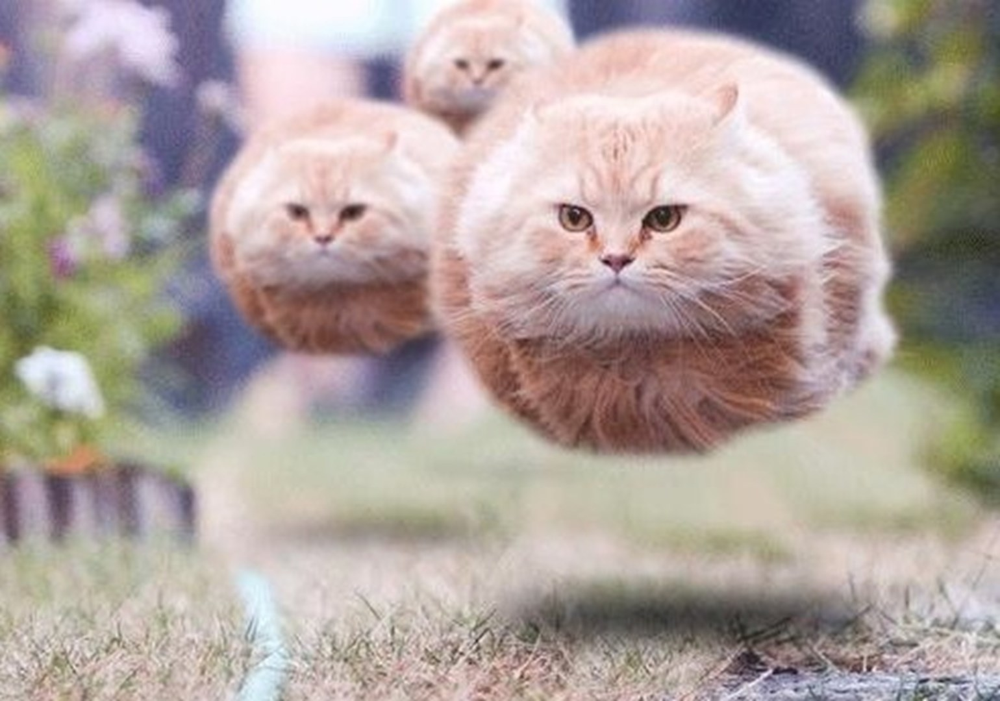
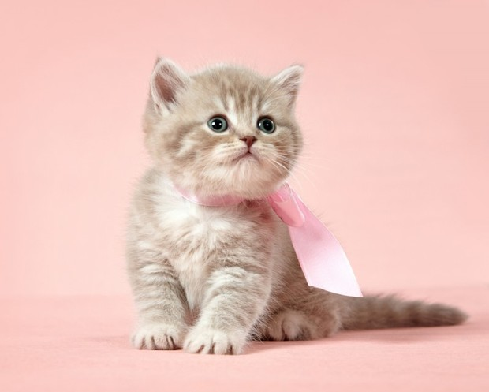

КОШКИ
 Ко́шка, или дома́шняя ко́шка (лат. Félis silvéstris cátus), — домашнее животное, одно из наиболее популярных (наряду с собакой) «животных-компаньонов».
С точки зрения научной систематики, домашняя кошка — млекопитающее семейства кошачьих отряда хищных.
Ко́шка, или дома́шняя ко́шка (лат. Félis silvéstris cátus), — домашнее животное, одно из наиболее популярных (наряду с собакой) «животных-компаньонов».
С точки зрения научной систематики, домашняя кошка — млекопитающее семейства кошачьих отряда хищных.
Узнать больше...
ЕЩЁ НЕМНОГО О КОШКАХ

Являясь одиночным охотником на грызунов и других мелких животных, кошка — социальное животное, использующее для общения широкий диапазон звуковых сигналов, а также феромоны и движения тела.
В настоящее время в мире насчитывается около 600 млн домашних кошек.
ЭТИМОЛОГИЯ
 В русском языке слово кошка означает либо представителя биологического подвида Felis silvestris catus вообще независимо от пола, либо самку этого подвида.
В русском языке слово кошка означает либо представителя биологического подвида Felis silvestris catus вообще независимо от пола, либо самку этого подвида.
Самца называют кот, а детёныша кошки — котёнок (мн. ч. котя́та).
Узнать больше...
ПРОИСХОЖДЕНИЕ
 Согласно генетическому исследованию, все домашние кошки по материнской линии происходят как минимум от пяти представительниц подвида степная кошка (Felis silvestris lybica), имеющих разные гаплотипы митохондриальной ДНК.
CLENTS